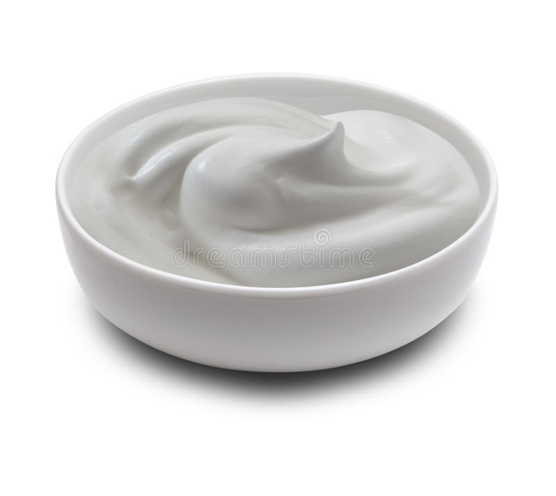
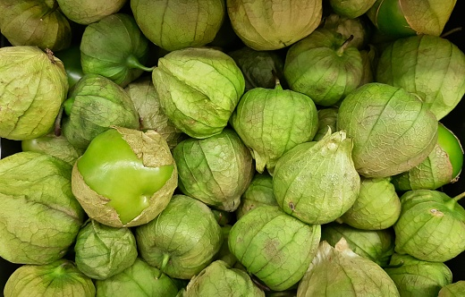

Chilaquiles con pollo
Ingredientes
- 1 Bolsa de totopos
- 1 Pieza de pechuga de pollo cocida y desmenuzada
- 1 Taza de crema 
- ¼ Taza de hojas de cilantro
- ½ kilo de tomate verde 
- 1 Diente de ajo
Procedimiento
- En una olla grande cocer el tomate, la cebolla, el ajo y el chilaquiles-verdes-con-pollo
- Licua los tomates, la cebolla y el ajo
- En un sarten mediano calentar el aceite, colocar la salsa freir y poner sasonador de pollo al gusto
- Colocar los totpos en un recipiente hondo, bañarlos en la saslsa y revolverlos muy bien, añadir el pollo y revolver una vez más
- Servir en un polato, bañar en crema y espolvorear queso
Ir al la reseta original aqui